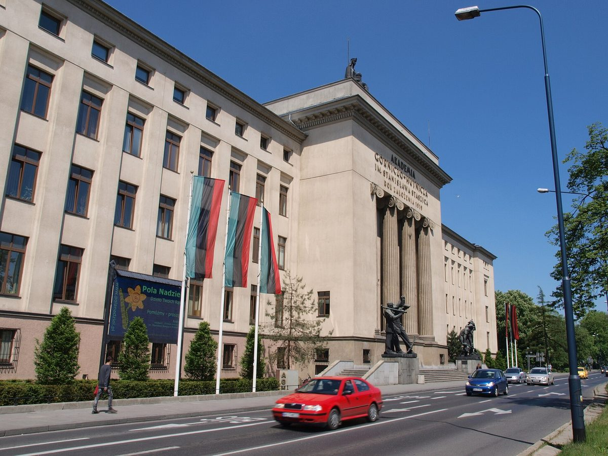

폴란드 크라쿠프, 시·AGH 대학·주택협동조합이 '지역 에너지 공동체' 설계 착수…에너지 협동조합·집합체 모델 비교 검토

'아그레가트 크라쿠프-크로보드자' 10월 28일 첫 회의…시 기관 에너지 비용 절감·전력 수급조정 시장 참여 가능성 검토, 절감 규모·시행 시기는 아직 안 정해져
폴란드 크라쿠프시가 AGH 과학기술대학, 타데우시 코시치우슈코 주택협동조합과 손잡고 지역 에너지 공동체를 꾸릴 방법을 찾는 '아그레가트 크라쿠프-크로보드자(Agregat Kraków-Krowodrza)' 사업을 시작했다. 세 기관은 앞서 맺은 협력 협정을 바탕으로 10월 28일 첫 회의를 열고 분석에 필요한 자료 범위와 다음 일정, 다른 기관의 합류 가능성, 지역 에너지 공동체를 만들 때 얻을 이득, 전력 수급조정(밸런싱) 시장에 참여할 가능성을 논의했다고 시와 협력 기관은 밝혔다. 검토 대상에는 '에너지 집합체(agregat energii)'와 '에너지 협동조합(spółdzielnia energetyczna)' 등 여러 공동체 조직 모델이 올라 있으며, 지금 에너지 기반시설의 상태와 현대화 필요, 투자 후보, 저탄소 기술 도입 가능성, 공동체 설립에 따르는 법·제도 조건도 함께 따진다. 협력 기관들이 내건 목표는 시 산하 기관과 시 소유 회사의 에너지 비용을 줄이고 지역 에너지 자원을 더 효율적으로 쓰며, 도시 에너지 안보를 높이고 배출을 줄이는 한편 주민의 에너지 전환 참여를 넓히는 것이다. 시 쪽 실무는 공공서비스·기반시설국이 맡는다. 사업은 아직 준비 단계로, 분석 결과는 지역 에너지 발전 방향과 투자 권고로 이어질 예정이지만 절감 규모와 시행 시기는 아직 정해지지 않았다.
시민에너지 관점
이 사업에서 눈여겨볼 점은 시와 대학 사이에 주택협동조합이 협정 당사자로 함께 앉았다는 것으로, 지붕과 전기 수요가 한데 모인 공동주택 단지가 도시 에너지 공동체의 기본 단위가 될 수 있음을 보여 준다. 절감액도 일정도 없는 분석 단계라 성과를 말하기 이르다는 지적이 있겠지만, 협동조합으로 할지 집합체로 할지 조직 형태부터 비교하는 순서는 결국 누가 소유하고 누가 결정하는지를 먼저 정하는 일이어서 오히려 제대로 된 출발이다. 수급조정 시장 참여까지 검토한다는 것은 공동체가 전기를 쓰기만 하는 쪽이 아니라 전력망 운영에 기여하고 그 대가를 받는 주체가 될 수 있다는 뜻이다. 국내에서도 지자체와 대학, 아파트 단지 주민 조직이 손잡고 단지 지붕 태양광과 수요 관리를 주민이 소유하는 공동체로 묶는 시범 사업을 시작해야 한다.
출처: Malopolskie24info 2026-10-29 Łukasz Biela 원문 보기
ポーランド・クラクフ、市・AGH大学・住宅協同組合が「地域エネルギー・コミュニティ」の設計に着手…エネルギー協同組合と集合体モデルを比較検討
「アグレガト・クラクフ＝クロヴォドジャ」が10月28日に初会合…市の機関のエネルギー費削減や電力需給調整市場への参加の可能性を検討、削減規模と実施時期はまだ決まらず
ポーランドのクラクフ市は、AGH科学技術大学、タデウシュ・コシチュシュコ住宅協同組合と組み、地域エネルギー・コミュニティをつくる方法を探る「アグレガト・クラクフ＝クロヴォドジャ（Agregat Kraków-Krowodrza）」事業を始めた。市と協力機関によると、3者は先に結んだ協力協定に基づいて10月28日に初会合を開き、分析に必要なデータの範囲や今後の日程、ほかの機関の参加の可能性、地域エネルギー・コミュニティをつくることで得られる利点、電力の需給調整（バランシング）市場に参加する可能性を話し合った。検討対象には「エネルギー集合体（agregat energii）」や「エネルギー協同組合（spółdzielnia energetyczna）」など複数のコミュニティ組織モデルが含まれ、現在のエネルギー基盤設備の状態と更新の必要性、投資の候補、低炭素技術の導入可能性、コミュニティ設立に伴う法制度上の条件もあわせて分析する。協力機関が掲げる目標は、市の機関や市が所有する会社のエネルギー費を減らし、地域のエネルギー資源をより効率的に使い、都市のエネルギー安全保障を高めて排出を減らすとともに、住民のエネルギー転換への参加を広げることだ。市側の実務は公共サービス・インフラ局が担う。事業はまだ準備段階で、分析結果は地域エネルギーの発展方向と投資の提言につながる予定だが、削減の規模と実施時期はまだ決まっていない。
市民エネルギーの視点
この事業で注目すべきは、市と大学の間に住宅協同組合が協定の当事者として加わったことで、屋根と電力需要が一か所に集まる集合住宅団地が、都市のエネルギー・コミュニティの基本単位になりうることを示している。削減額も日程もない分析段階で成果を語るのは早いとの指摘もあろうが、協同組合にするか集合体にするか組織形態から比べる順序は、結局のところ誰が所有し誰が決めるのかを先に定める作業であり、むしろ正しい出発点だ。需給調整市場への参加まで検討するということは、コミュニティが電気を使うだけの側ではなく、電力網の運用に貢献してその対価を受け取る主体になれるという意味だ。韓国でも自治体と大学、マンション団地の住民組織が手を組み、団地の屋根の太陽光と需要管理を住民が所有するコミュニティとして束ねるモデル事業を始めるべきだ。
出典: Malopolskie24info 2026-10-29 ウカシュ・ビエラ（Łukasz Biela） 原文を読む
波兰克拉科夫市、AGH大学与住宅合作社着手设计"地方能源社区"…比较研究能源合作社与能源聚合体模式
"克拉科夫-克罗沃德扎聚合体"10月28日召开首次会议…研究降低市属机构能源开支、参与电力平衡市场的可能性，节省规模和实施时间尚未确定
波兰克拉科夫市与AGH科技大学、塔德乌什·科希丘什科住宅合作社联手，启动了探索组建地方能源社区路径的"克拉科夫-克罗沃德扎聚合体（Agregat Kraków-Krowodrza）"项目。据市政府和合作机构介绍，三方依据此前签署的合作协议，于10月28日召开首次会议，讨论了分析所需的数据范围、后续日程、其他机构加入的可能性、组建地方能源社区可带来的好处，以及参与电力平衡市场的可能性。研究对象包括"能源聚合体（agregat energii）"和"能源合作社（spółdzielnia energetyczna）"等多种社区组织模式，同时还将分析现有能源基础设施的状况与改造需求、潜在投资项目、引入低碳技术的可能性，以及设立社区涉及的法律和制度条件。合作机构提出的目标是降低市属机构和市属公司的能源开支，更有效地利用本地能源资源，提高城市能源安全、减少排放，同时扩大居民对能源转型的参与。市政府方面的具体工作由公共服务与基础设施局负责。项目目前仍处于准备阶段，分析结果将用于确定地方能源发展方向并提出投资建议，但节省规模和实施时间尚未确定。
市民能源视角
这个项目值得关注的是，住宅合作社与市政府、大学一起成为协议当事方，这说明屋顶和用电需求集中在一处的集合住宅小区，可以成为城市能源社区的基本单位。有人会说，在既没有节省金额也没有时间表的分析阶段谈成效为时过早，但先比较是采用合作社还是聚合体这一组织形式，归根结底是先确定谁拥有、谁决策，反而是正确的起点。研究参与电力平衡市场，意味着社区不只是用电的一方，也可以成为为电网运行作出贡献并获得回报的主体。韩国也应由地方政府、大学和公寓小区居民组织携手，启动把小区屋顶光伏和需求管理整合为居民所有的能源社区的试点项目。
来源: Malopolskie24info 2026-10-29 乌卡什·别拉（Łukasz Biela） 查看原文
Krakow, AGH University and a housing cooperative begin designing a local energy community, weighing energy cooperative and aggregator models
"Agregat Kraków-Krowodrza" held its first meeting on October 28 to look at cutting energy costs for city bodies and joining the electricity balancing market; the scale of savings and a start date have not been set
The Polish city of Krakow has teamed up with AGH University of Science and Technology and the Tadeusz Kościuszko Housing Cooperative to launch "Agregat Kraków-Krowodrza," a project to work out how to set up a local energy community. According to the city and its partners, the three held their first meeting on October 28 under a cooperation agreement signed earlier, discussing the data needed for analysis, the next steps, whether other institutions could join, the benefits of forming a local energy community and the possibility of taking part in the electricity balancing market. The models under review include an "energy aggregator" (agregat energii) and an "energy cooperative" (spółdzielnia energetyczna), among other forms of community organisation, and the partners will also assess the state of existing energy infrastructure and its modernisation needs, possible investments, the scope for low-carbon technologies and the legal and regulatory conditions for creating a community. The stated aims are to lower energy costs for municipal bodies and city-owned companies, make better use of local energy resources, strengthen the city's energy security, cut emissions and widen residents' part in the energy transition. On the city side the work is coordinated by its municipal services and infrastructure department. The project is still at the preparatory stage; its findings are meant to lead to recommendations on local energy development and investment, but the size of any savings and the timing have not been set.
Citizen Energy View
What stands out is that a housing cooperative sits alongside the city and the university as a party to the agreement, showing that apartment estates, where roofs and electricity demand are concentrated, can become the basic unit of an urban energy community. Some will say it is too early to talk about results at an analysis stage with no savings figure or timetable, but comparing a cooperative with an aggregator before anything else means deciding first who owns and who decides, which is the right place to start. Looking at the balancing market also means a community need not only consume power but can help run the grid and be paid for it. In Korea, too, local governments, universities and apartment residents' organisations should launch pilots that bring estate rooftop solar and demand management together into communities owned by residents.
Source: Malopolskie24info 2026-10-29 Łukasz Biela Read the original